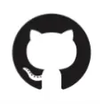

Visual Studio code includes Podman support
The best free & open source container tools
Manage containers, pods, and images with Podman. Seamlessly work with containers and Kubernetes from your local environment.
Latest stable v4.3.0-Apache License 2.0
Supported Platforms
Fast and light.
Secure.
Open.
Compatible.
Kubernetes Ready
A growing set of compatible tools
Cirrus CLI allows you to reproducibly run containerized tasks with Podman
GitHub Actions include support for Podman, as well as friends buildah and skopeo
Kind's ability to run local Kubernetes clusters via container nodes includes support for Podman.
What people are saying about Podman
Shakeel Ahmad Minhas

Looking for a lightweight and efficient way to run containers on your Mac? Give Podman a try! This open-source container engine can help you manage your containerized applications easily on macOS. #Mac #Podman #Containers
Mar 9, 2023
Marco Mornati
Just getting back to test #podman-desktop I used a bit after the #docker-desktop payment announcement. Changes are incredible and on #macosx all looks pretty smooth right now: docker API, host folder sharing, port sharing with hosts, privileged access (I test with https://github.com/mmornati/docker-mock-rpmbuilder), ... I think this became THE replacement for what we knew...
Feb 19, 2023
Latest Podman News
Have fun coloring and learn about Podman!
A decentralized team of open source container tool superheroes comes to the rescue when an asteroid storm threatens the planet. Learn about each tool—Podman, CRI-O, Buildah, Skopeo, and OpenShift—as they redesign the planet's protective shields' container deployment to protect Earth.
Download